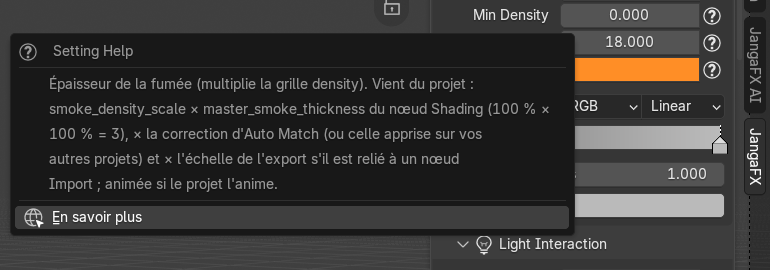
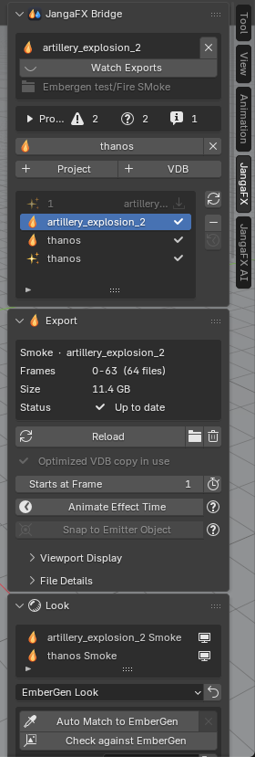
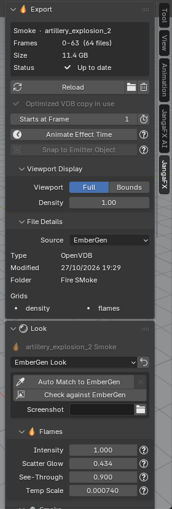
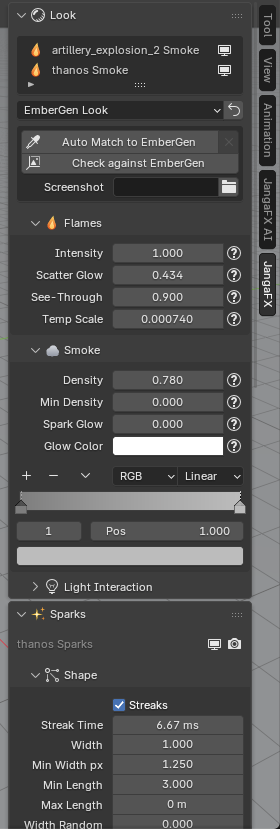
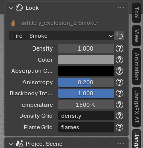
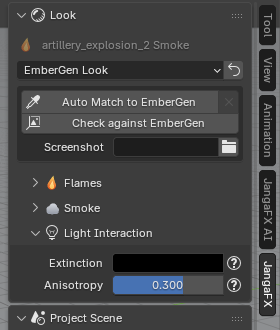
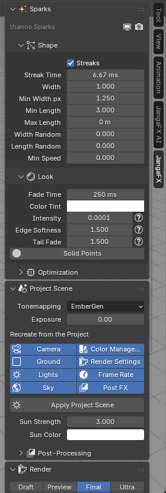
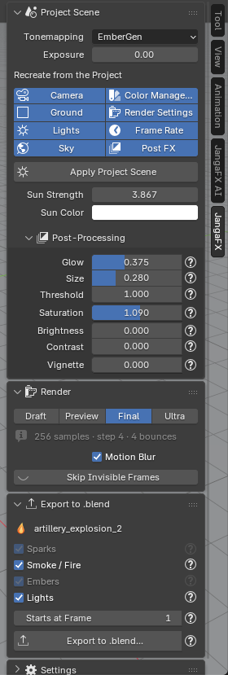
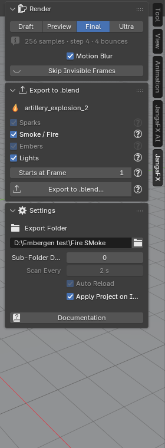

The JangaFX panel
The JangaFX panel (N key in the 3D viewport, JangaFX tab) is split into sections that you can
collapse (click the title) or reorder (drag the :::: handle to the right of the title). A section only appears
when it is useful: for example Sparks only if the project has sparks.
Everywhere, the ? button next to a setting explains what it does and where its value comes from (read from the project, measured, or chosen by the add-on). Hover it for a tooltip, click it for a popup that stays open, with the Learn more link to this documentation.


The settings for sparks, liquid and render also show their explanation when you hover over them.
Project and exports list
The first section, JangaFX Bridge, shows the active project in a card:
- the project name and the cross (on the right) to close the project (effects already imported stay in the scene);
- Watching Exports / Watch Exports: turns watching of the exports folder on or off;
- the watched folder (in grey);
- the project report.
A scene can hold several projects. Below the card, every other open project is a button: click it to make it active (its card and report come back), its cross closes it. VDB folders added by hand are listed there too, in grey.
- + Project: opens another EmberGen or LiquiGen project without closing this one;
- + VDB: imports a VDB sequence from any folder, even without a project, with the EmberGen look; its folder is added to the watched sources.
Below it, the exports list found, across all projects: one row per export, with an icon according to its role (smoke, fire, sparks, liquid) and its state on the right:
- tick: imported and up to date;
- arrows: the file changed on disk, it needs to be reloaded;
- red triangle: files are missing;
- greyed-out row: not imported yet.
The buttons to the right of the list:
- Rescan (arrows): reads the exports folder again right away;
- Remove from Library (−): removes the selected export from the list and its object from the scene (the files stay on disk);
- Show Removed: brings back the removed exports.


Selected export
The Export section describes the row chosen in the list: its role and name, the frames (Frames), the size on disk (Size), the state (Status) and the missing frames if there are any.
- Export not imported yet: Import adds it to the scene, the folder button opens its folder.
- Imported export:
- Reload: reloads it from disk;
- folder button: opens its folder in the file explorer;
- trash can (Remove): deletes the imported object (the files stay on disk).
- Slow to read: no grid index and Optimize VDB Files: EmberGen's VDBs have no grid table,
so Blender re-reads the whole file for each grid at every frame. Optimize VDB Files writes an indexed copy
(same grids, same values, lossless) in a
JangaFX Optimizedsubfolder and uses it. The approximate size of the copy is shown below. Once done, the line becomes Optimized VDB copy in use. - Starts at Frame: the scene frame where the export's first frame plays. The button on the right (Fit Scene Range) sets the scene's frame range to the export's.
- Animate Effect Time: drives the effect's time with an animatable value (Effect Frame) to slow it down, speed it up, freeze it or change its frame rate; and Snap to Emitter Object: attaches the effect to an object of the scene. Both are explained in Export the effect to .blend.
Two collapsed subsections:
- Viewport Display (volumes): Full shows the volume, Bounds only its box (the fastest); Density changes the density in the 3D viewport only (not in the render).
- File Details: source (EmberGen, LiquiGen), file type, modification date, folder and the list of the VDB's grids.


Look
The Look section sets the appearance of the volume (smoke and fire).
When the scene has several volumes (several projects, copies, manual imports), it lists them all at the top: click a row to set that volume, the screen icon on the right hides or shows it in the 3D viewport. A volume that does not come from the open project has a grey label: Copy (copy of an export, Shift+D), Bridge (the add-on's look) or Manual (imported by hand); for it, only the material settings are shown. With a single volume, its name is shown in grey at the top.
The menu at the top chooses the preset:
- EmberGen Look (default): reproduces the render of the EmberGen project (
.ember); with no project found, these are EmberGen's default values; - Fire + Smoke, Smoke, Fire: simple looks (see below).
The arrow button on the right (Apply Preset) rebuilds the material with the chosen preset; with EmberGen Look, the project is read again. Careful: your manual tweaks are replaced.
With EmberGen Look, a box offers:
- Auto Match to EmberGen and the cross on the right (Reset Auto Match);
- Check against EmberGen;
- Screenshot: a screenshot of EmberGen to use as a reference (optional), and At Frame, the frame it shows.
These tools are explained in Check and Auto Match.


Simple looks
With Fire + Smoke, Smoke or Fire, the volume uses a simple Blender material (Principled Volume) whose settings are shown directly: density, colour, absorption colour, scattering direction (Anisotropy), fire strength (Blackbody Intensity), temperature, and the VDB grids used for smoke (Density Grid) and for fire (Flame Grid). These values come from the preset, not from the project.


Flames
Flames subsection (only if the project has fire: a non-empty flames grid and an emitter that emits temperature
or fuel; a smoke-only project has no such subsection, even when EmberGen exported a flames grid):
- Intensity: strength of the flames' light;
- Scatter Glow: glow of the flames scattered into the surrounding smoke (orange glow of explosions);
- See-Through: thins the smoke where there are flames so that it does not hide them;
- Temp Min (K) and Max (K): temperatures at the start and end of the flames' colour gradient;
- Gamma: curve of this gradient (above 1, the flames stay longer in the lower part of the gradient);
- Temp Scale: divisor of the VDB's temperature grid, measured at import;
- the flames' colour gradient, read from the project.
Smoke
Smoke subsection:
- Density: thickness of the smoke;
- Min Density: below this threshold, the smoke is not drawn;
- Tint Temp Min and Max (K): when the smoke is tinted by temperature, the temperatures at the start and end of its gradient;
- Spark Glow and Glow Color: light from the sparks scattered into the smoke, and its colour;
- the smoke's colour gradient.
Light interaction
Light Interaction subsection (collapsed):
- Extinction: tint of the smoke as seen by the camera;
- Shadow Tint: tint of the shadows in the smoke (only if the project sets it separately);
- Anisotropy: direction of light scattering (positive: the smoke lights up when backlit).


Emissive masking
Emissive Masking subsection (collapsed, absent when the flames are "blackbody", which it does not affect): switches off the flames where the smoke has a certain density, like EmberGen.
- Density Ref: density around which the flames are switched off;
- Width: width of the transition;
- Ramp: curve of the mask;
- Intensity: strength of the mask (at 1, the flames are completely switched off at the reference density).
These settings can be animated if the project animates them (keyframe diamond on the right).
Sparks
The Sparks section appears when the project has particles (Alembic export). It stays visible whatever row is chosen in the list. At the top, the sparks object with two buttons: visible in the 3D viewport (screen) and in the render (camera).
- Shape: shape of the streaks. Streaks (streaks aligned with the velocity; unticked: round dots), Streak Time, Width, Min Width px (minimum width on screen, in pixels), Min Length, Max Length, Width Random, Length Random, Min Speed (hides slower particles, for example resting on the ground).
- Look: Fade Time, Color Tint (multiplies the colour), then Intensity (brightness), Edge Softness (softness of the edges) and Tail Fade (fading of the streaks' tail). The Solid Points button replaces the additive glow with opaque emissive points, ten times thinner: Cycles renders about ten times faster, without black holes where many particles overlap.
- Optimization (collapsed): display in the 3D viewport and in the render, Points in Viewport (dots instead of streaks in the viewport, the render keeps the streaks), Resolution (streak segments) and Seed.
Hover over a setting to read where its value comes from.


If the section shows "Older spark setup: reload the export to get every setting", reload the export (Reload) to get all the settings.
Liquid
The Liquid section appears with a LiquiGen project.
- The LiquiGen Look menu chooses the liquid's material: the LiquiGen project's appearance, or one of your water materials found in your asset libraries (added once, textures linked).
- The button on the right (Detail Preview) sets up the 3D viewport to read the liquid's details well (Solid mode, shiny matcap, foam in white, more smoothing).
- A Check against LiquiGen box with LiquiGen Capture and At Frame (see Check a LiquiGen project).
- Surface Foam: foam painted on the surface, off after import (the foam comes from the particles); on/off in the viewport and in the render, its Shader (empty: built-in white foam), its amount and shape: Coverage, Threshold, Softness, Lace Scale, Lace Width, Lace Amount, Distortion, Foam Height, and for the froth Bubble Size, Bubble Variation, Bubble Relief, Translucency, Color. These values are choices made by the add-on, not read from the project.
- Smooth Exported Mesh: smoothing of the mesh exported by LiquiGen.
- Surface from Particles: surface rebuilt from the particles (hidden when the exported mesh is used).
- One box per type of white particles (foam, spray, bubbles), with its render button.

Project scene
The Project Scene section recreates the project's atmosphere:
- Tonemapping: EmberGen (the project's curve, like EmberGen), Filmic (soft highlights, the flames turn pale yellow), AgX (Blender's) or Realistic (like a photo of an explosion: orange body, yellow-white core);
- Exposure: exposure on top of this setting, in stops;
- Recreate from the Project: what Apply Project Scene should recreate:
- Camera: EmberGen's camera (field of view, orbit, distance);
- Ground: the project's ground, so that the effect lights it and is reflected in it;
- Lights: the project's lights (sun, point and spot lights);
- Sky: the project's world (sky and ambient light); unticked, your world or HDRI is kept;
- Color Management: the view transform and look (EmberGen tonemapping); unticked, your scene's colours are kept;
- Render Settings: Cycles samples, volume step and motion blur from the chosen quality (Render section); unticked, yours are kept;
- Frame Rate: the project's frame rate;
- Post FX: the project's post-processing;
- Apply Project Scene: recreates what is ticked above;
- Sun Strength and Sun Color: strength and colour of the project's sun.


Post-processing
Post-Processing subsection (collapsed), when the project has post-processing. It is redone in Blender's compositing:
- Glow, Size, Threshold: strength and size of the halo around bright areas, and the brightness from which it appears;
- Saturation, Brightness, Contrast: colours of the final image;
- Vignette: darkening of the edges;
- a line "Channel swap … (from the project)" if the project swaps colour channels.
Render
The Render section:
- Draft / Preview / Final / Ultra: Cycles render quality. Draft is the fastest (for timing and framing), Preview to judge the look, Final for production, Ultra with no time limit. The grey line below summarises the samples, the volume step and the light bounces.
- Motion Blur: motion blur computed from the exported velocity (Cycles).
- Skip Invisible Frames: does not render the effect at frames where the active camera does not see it (not yet simulated, out of view or reduced to a few pixels); run it again after changing the camera or the frame range. The eye button next to it (Render All Frames) cancels this.
Export to .blend
The Export to .blend section writes the effect into a .blend file to add to another scene. Everything is
explained in Export the effect to .blend.
Settings
The Settings section (collapsed):
- Export Folder: the folder where EmberGen and LiquiGen write their exports (filled in by Open Project);
- Sub-Folder Depth: number of subfolder levels scanned;
- Scan Every: time between two reads of the folder (when watching is on);
- Auto Reload: automatically reloads an imported export when its files change;
- Apply Project on Import: when importing an export that has its project next to it, automatically applies its lights, tonemapping, post-processing and render quality;
- Documentation: opens this documentation in your browser.

